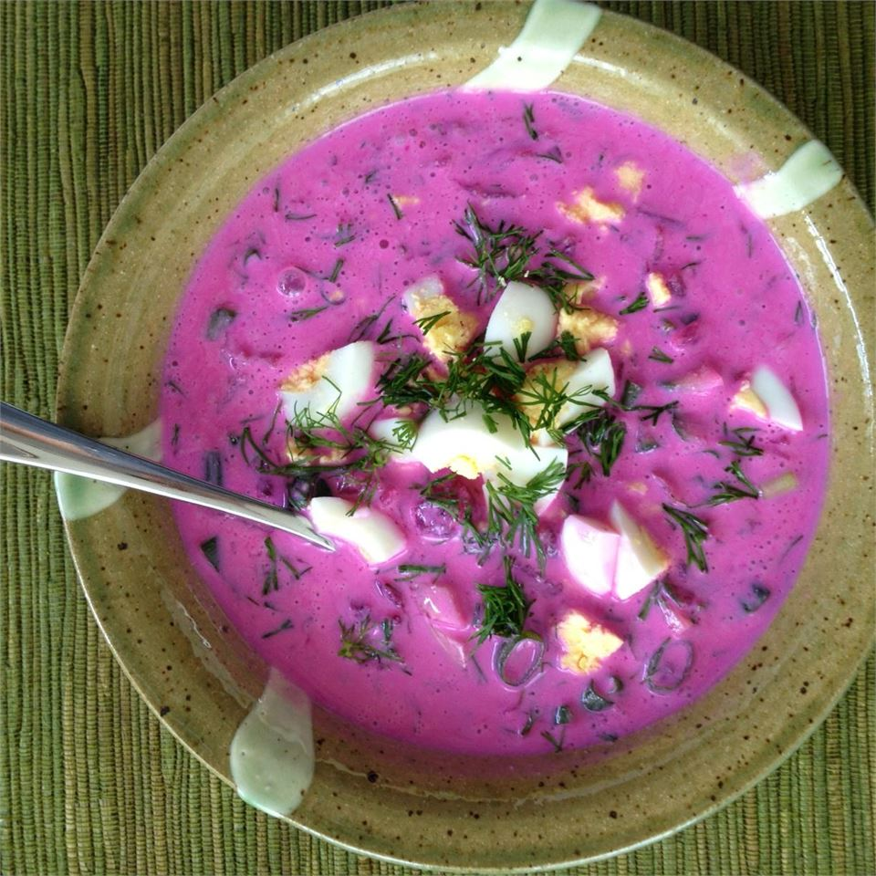

Back
Šaltibarščiai

Description
This Lithuanian family recipe from the old country makes an awesome summer soup! Serve with warm Yukon Gold
potatoes.
Ingredients
- 4 eggs
- 1 quart buttermilk/kefir
- 1 pound beets, peeled and shredded
- 1 large English cucumber - peeled, quartered and sliced
- 1/4 cup minced chives
- 1 bunch fresh dill, minced
Steps
- Place the eggs into a saucepan in a single layer and cover the eggs with water by 1 inch. Cover the saucepan
and bring the water to a boil. Remove from the heat and let the eggs stand in the hot water for 15 minutes;
drain. Cool the eggs under cold running water in the sink. Peel and chop the eggs.
- Pour the buttermilk into a large bowl; add the eggs, beets, cucumber, chives, and dill. Stir gently to
combine. Chill in refrigerator for 1 full day before serving.
Top